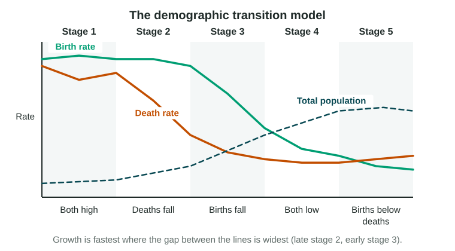

The last topic gave you the rates. This topic puts them together into a story of change over time. It is one of the models the exam names, so learn its stages, its assumptions and its limits.
The demographic transition model
A model is a simple picture of how something works. The demographic transition model (DTM) describes how birth and death rates change as a society changes: death rates fall first, then birth rates. It was built from the history of Europe and North America. It assumes that as a country builds industry and cities, death rates fall and families then choose to have fewer children, and it leaves migration out.

| Stage | Birth rate | Death rate | Growth | Why |
|---|---|---|---|---|
| 1 | High | High | Slow | Disease and hunger kill many; families have many children |
| 2 | High | Falling fast | Very fast | Better food, clean water, sewers and vaccines |
| 3 | Falling | Low | Slowing | Children survive, cost more in cities; girls stay in school longer |
| 4 | Low | Low | Slow or none | Small families are the norm |
| 5 | Very low | Low but rising | Negative | Births fall below deaths in an older population |
The population grows fastest where the gap between the two lines is widest, in late stage 2 and early stage 3.
"Consistent with," not "in"
A country is never "in" a stage as a fact. Its data are consistent with a stage. Say what the data show, from what source and year:
- Japan has recorded more deaths than births every year since the late 2000s (Statistics Bureau of Japan). Those data are consistent with stage 5.
- Niger’s birth rate is still very high while its death rate has fallen far (UN World Population Prospects 2024). Those data are consistent with stage 2.
Watch the trap: a population that grows slowly is not always in stage 1. Stage 1 has high rates. A country with low birth and death rates, or with deaths above births, is consistent with stage 4 or 5.
The epidemiological transition
The epidemiological transition model describes how the main causes of death change as a society changes. It runs alongside the DTM.
- Pestilence and famine. Infections and hunger kill many people, many of them young. (DTM stage 1.)
- Receding pandemics. Clean water, sewers and vaccines cut deaths from infection. (DTM stage 2.)
- Degenerative and human-created diseases. Heart disease, cancer and stroke lead, along with deaths from smoking and pollution. (DTM stage 3.)
- Delayed degenerative diseases. Medicine delays these diseases, so people live longer. (DTM stage 4.)
- Reemerging infections. Some geographers add this stage: new diseases, such as COVID-19 in 2020, and old ones that resist antibiotics.
HIV in southern Africa in the 1990s and 2000s shows the path can reverse for a time: deaths from infection rose again and life expectancy fell.
How well does the model fit?
A model is useful because it is simple, and simple models leave things out. The DTM’s limits:
- Built on European history. In many countries of Asia, Africa and Latin America, death rates fell much faster after 1950, because vaccines and medicine arrived from abroad. Populations grew faster than in Europe.
- No migration. The model tracks births and deaths only. The United Arab Emirates grew very fast after 1980 because workers moved in, and the model cannot show that.
- No set path or timing. Some countries move fast, some stall, and government policy can change the path, as China’s birth limits did after 1980.
- Stage 5 is not universal. Not every country with low rates falls into natural decrease.
- It describes, it does not predict. Nothing says a country must reach the next stage.
When you use the model, say what the data show, which stage they fit and one way the real case differs from the model.